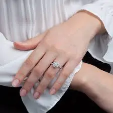
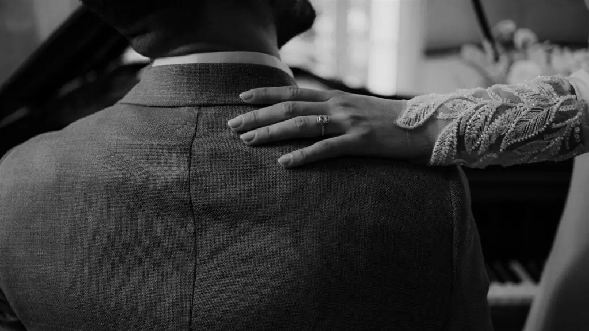
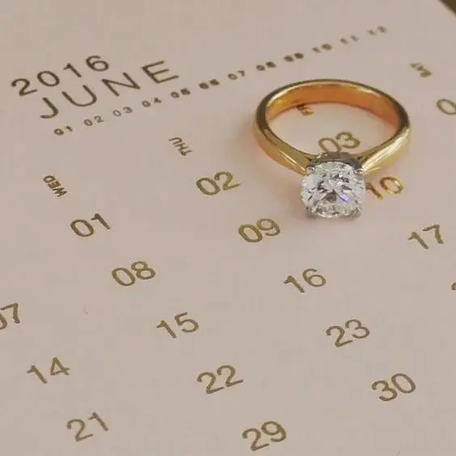
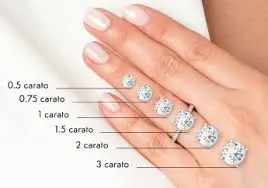
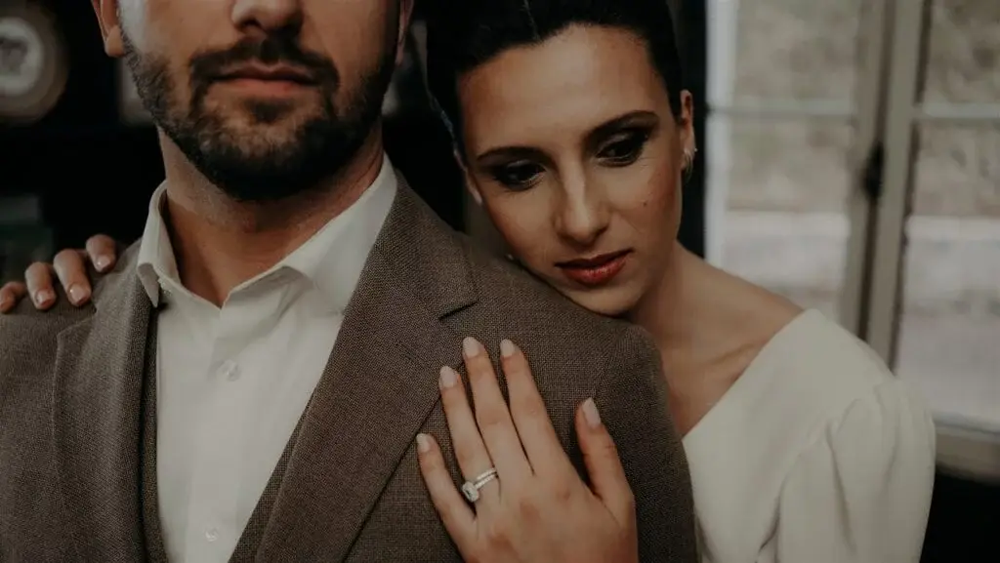
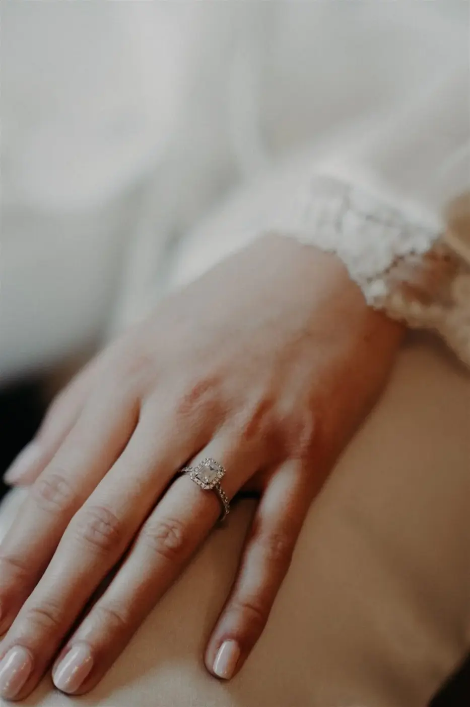
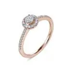
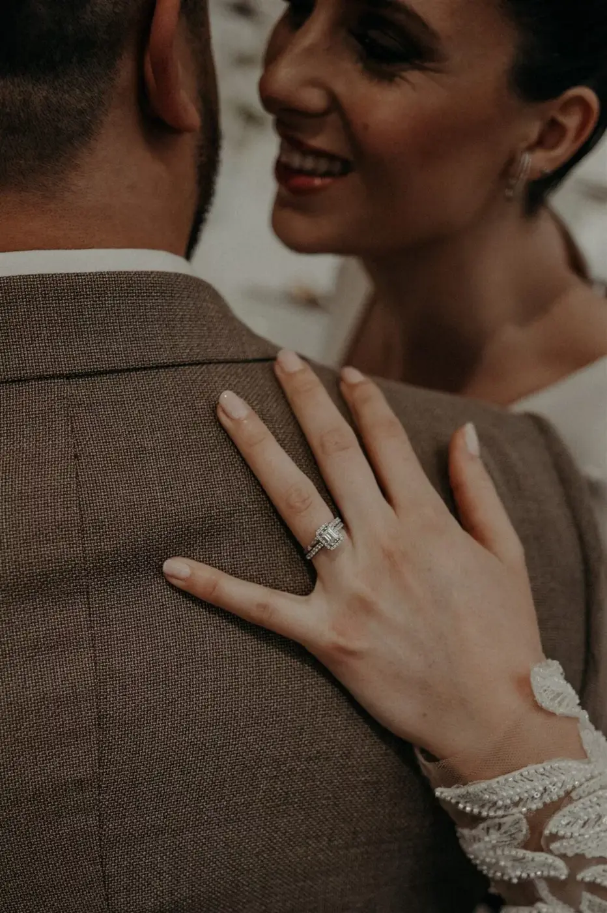

L’achat d’une bague de fiançailles est bien plus qu’une simple acquisition : c’est un symbole concret de votre amour et de votre engagement mutuel. Pour de nombreux couples, c’est l’un des choix les plus importants dans la préparation du mariage, une décision qui mérite réflexion et attention.
Le mariage représente une étape majeure dans la vie de tous les couples, et le choix de la bague de fiançailles est un des éléments les plus importants. Au-delà de son aspect matériel, cette bague symbolise l’engagement à vie et l’amour éternel entre vous et votre conjoint/e. Du style au choix du métal, en passant par les caractéristiques des diamants, chaque détail compte pour faire de cet anneau un symbole parfait de votre amour et de votre engagement. Ce guide complet vous fournira les outils nécessaires pour prendre une décision éclairée et réfléchie.
L’union de deux âmes est un moment magique et unique, marqué par la demande en mariage, un instant souvent chargé d‘émotion et de tendresse. Dans le monde du mariage, la demande est bien plus qu’une simple question ; c’est une promesse de vie commune et de bonheur partagé. Que vous choisissiez de faire votre demande lors d’un dîner intime, au sommet d’une montagne ou dans un lieu chargé de souvenirs, l’essentiel est de capturer l’essence de votre amour et de votre complicité. C’est le début d’une nouvelle aventure, l’union de deux parcours de vie qui se rejoignent pour ne faire qu’un.
La demande en mariage est souvent le point de départ de nombreux préparatifs excitants. Il s’agit d’un moment où l’on commence à rêver du grand jour, à imaginer la cérémonie parfaite, et à planifier chaque détail avec soin. Les alliances, symboles éternels de l’union, sont choisies avec une attention particulière, représentant la promesse d’un amour sans fin. La robe de mariée, le costume, les fleurs, la musique, tout est minutieusement sélectionné pour que ce jour soit inoubliable.
Qu’est ce que la bague de fiançailles ?
Avant toute chose, la demande en fiançailles est une tradition qui marque l’union entre 2 personnes. Comme on a pu l’entendre, l’échange de bagues de fiançailles remonte à des siècles et a ses racines dans des rituels anciens et des pratiques symboliques.
La bague elle-même est un témoignage visible de l’engagement pris par deux personnes qui se promettent fidélité et amour pour toute leur vie. Au-delà de sa valeur matérielle, la bague de fiançailles revêt une signification profonde dans les relations modernes.
Elle marque le début d’un voyage vers le mariage, un engagement mutuel à bâtir un futur ensemble, à surmonter les défis et à célébrer les joies de la vie à deux.


La bague de fiançailles est plus qu’un simple bijou ; c’est un symbole chargé d’émotions et de significations profondes dans la culture occidentale.
Traditionnellement, elle marque l’étape précédant le mariage, symbolisant l’engagement sérieux et l’intention de construire un avenir commun.
Généralement ornée d’un diamant ou d’une autre pierre précieuse, la bague de fiançailles est choisie avec soin pour sa beauté et sa symbolique. Le diamant central est souvent entouré de pierres plus petites ou est monté sur un métal précieux comme l’or blanc, l’or jaune, le platine, ou parfois l’argent, selon les préférences personnelles et les traditions culturelles.
Chaque bague de fiançailles est unique, non seulement par son design et ses caractéristiques physiques, mais aussi par le sentiment d’amour et de dévotion qu’elle représente pour le couple. C’est un symbole tangible de l’amour partagé, de la confiance mutuelle et de la promesse de soutenir et d’aimer l’autre à travers tous les aspects de la vie.
Elle incarne l’engagement profond de 2 personnes prêtes à unir leurs destins et à construire un avenir ensemble. Chaque jour, elle rappelle la beauté de leur union et la sincérité de leur demande et représente l’engagement.
Et pour vous, quelle est la bague qui représente le mieux l’incarnation d’un engagement profondément émotionnel et spirituel ?

Comment déterminer le style de la bague ?
Déterminer le style parfait de votre bague de fiançailles est une étape essentielle qui marque l’union de vos deux âmes et la demande en mariage, un moment précieux et mémorable. Chaque bague raconte une histoire unique et personnelle, symbolisant la promesse d’un amour éternel et d’un engagement sincère.
Quelles sont les préférences de votre partenaire ?
Avant de se lancer dans l’achat d’une bague de fiançailles, il est essentiel de comprendre les goûts et les préférences de votre futur/e époux/se. Observez ses habitudes en matière de bijoux ! Préfère-t-il/elle l’or, l’argent, ou le platine ? Opte-t-il/elle pour des designs classiques, modernes ou vintage ? Un discret sondage auprès de ses amis proches ou de sa famille peut vous fournir des indications précieuses sur ce qu’il/elle aime et ce qui lui convient le mieux…

Choisir un design intemporel
L’union de vos goûts personnels avec les tendances actuelles peut également influencer votre choix. Bien que les tendances en matière de bijoux évoluent, une bague de fiançailles est destinée à être portée pour la vie. Il faut alors opter pour un design intemporel qui traversera les années sans perdre de son élégance. Les solitaires, les bagues pavées de diamants et les bagues halo sont des choix classiques qui continuent de captiver par leur beauté et leur élégance. Un design intemporel assure que la bague demeurera un symbole de votre amour pour les décennies à venir.
La demande en mariage est l’occasion parfaite pour personnaliser votre bague. Pensez à graver un message spécial à l’intérieur de l’anneau ou à choisir une pierre ayant une signification particulière pour vous deux. Les alliances sur mesure, créées avec l’aide d’un joaillier, permettent d’incorporer des éléments uniques et symboliques, faisant de votre bague un véritable reflet de votre histoire d’amour.
Je vous conseillerai de faire attention au style parfois trop atypique puisque votre femme portera une alliance et devra se concorder.
Comment comprendre les 4C du diamant ? Carat, Clarté, Couleur et Taille (cut)
Carat
Le carat d’un diamant se réfère à son poids, influençant directement sa taille et son coût. Il est crucial de trouver un équilibre entre la taille du diamant et la qualité globale, en fonction de votre budget. Un diamant plus grand n’est pas toujours le meilleur choix si sa qualité compromet la brillance et la pureté.

Clarté

La clarté d’un diamant mesure la présence d’inclusions ou d’imperfections visibles à l’œil nu. Les diamants de haute clarté sont plus rares et plus coûteux, mais des diamants avec des inclusions mineures peuvent offrir une beauté équivalente à un coût moindre. L’important est de choisir un diamant dont les inclusions n’altèrent pas significativement sa beauté.
Couleur
Les diamants sont évalués sur une échelle de couleur allant de D (incolore) à Z (teintes de jaune ou marron). Les diamants incolores (D-F) sont les plus prisés pour leur pureté et leur éclat. Cependant, les diamants avec une légère teinte (G-J) peuvent également être très beaux tout en étant plus abordables.

Taille (cut)

La taille d’un diamant ne se réfère pas seulement à sa forme physique, mais aussi à la manière dont il est taillé pour maximiser sa brillance et sa dispersion de lumière. Une coupe bien réalisée peut transformer un diamant de qualité moyenne en une pierre étincelante et attrayante.
Quel métal choisir pour l'anneau ?
Le choix du métal pour l’anneau de fiançailles détermine non seulement son apparence esthétique, mais aussi sa durabilité et son entretien à long terme.
Or blanc, jaune ou rose :
L'or blanc offre un aspect moderne et élégant, parfait pour ceux qui apprécient la simplicité et la sophistication. L'or jaune, classique et chaleureux, évoque une tradition intemporelle. L'or rose, romantique et tendance, est idéal pour ceux qui recherchent une touche de modernité dans leur choix de bague.

Platine :
Le platine est un métal précieux connu pour sa durabilité exceptionnelle et sa résistance aux égratignures. Bien que plus coûteux que l'or, le platine est hypoallergénique, ce qui en fait une option idéale pour ceux ayant une peau sensible et recherchant un anneau à long terme sans souci d'entretien.

Argent :
Moins coûteux que l'or et le platine, l'argent est une alternative abordable pour une bague de fiançailles. Cependant, il nécessite un entretien régulier pour éviter le ternissement et maintenir son éclat au fil du temps.

Comment définir un budget réaliste?
Estimation du coût
Avant de commencer votre recherche, déterminez un budget réaliste pour l’achat de la bague de fiançailles. Il est important de considérer non seulement le coût de la bague elle-même, mais aussi d’autres dépenses telles que les frais de certification du diamant et les éventuels ajustements ou réparations nécessaires.
Options de financement
De nombreux bijoutiers offrent des options de financement qui peuvent faciliter l’achat de la bague de fiançailles tout en respectant vos contraintes budgétaires. Renseignez-vous sur les plans de paiement échelonnés, les crédits sans intérêt ou d’autres arrangements qui pourraient être adaptés à votre situation financière spécifique. De plus, il y a des salons des alliances dans les grandes villes tel que Bordeaux. Des offres sont mises en place et deviennent très avantageuses lors de ces ventes.
Priorisation des critères
En fonction de votre budget, vous pourriez avoir besoin de faire des compromis sur certains aspects de la bague, tels que la taille du diamant ou le métal de l’anneau. Discutez avec votre partenaire des critères qui sont les plus importants pour elle afin de trouver un équilibre satisfaisant entre qualité et coût.
Pourquoi acheter auprès d'un vendeur de confiance ?
Recherche et réputation du bijoutier
L’union de deux personnes est un moment unique et précieux, et la bague de fiançailles doit refléter cette beauté et cette profondeur. Un vendeur de confiance vous guidera dans ce choix important, offrant des conseils avisés et une expertise inestimable. Prenez le temps de rechercher des bijoutiers réputés et dignes de confiance avant de finaliser votre achat. Lisez les avis en ligne, demandez des recommandations à vos amis et votre famille, et assurez-vous que le bijoutier que vous choisissez possède une bonne réputation pour la qualité de ses produits et son service client. L’union de deux vies est un engagement sérieux et durable, tout comme la qualité de la bague de fiançailles doit l’être. En choisissant un vendeur de confiance, vous investissez dans une pièce qui non seulement symbolise votre demande, mais qui perdurera à travers les années, tout comme votre amour. Un bon vendeur offre également un service après-vente impeccable, garantissant que votre bague reste aussi belle que le jour de votre demande. Par exemple Zeina est une boutique spécialisée dans les alliances située au cœur de Bordeaux. Reconnue pour son expertise et son savoir-faire, Zeina propose une large gamme d’alliances allant des modèles classiques aux créations sur-mesure. Chaque pièce est minutieusement sélectionnée pour sa qualité exceptionnelle et son design raffiné. L’équipe de Zeina, composée de professionnels passionnés, est dédiée à accompagner chaque couple dans le choix de l’alliance parfaite, celle qui symbolisera leur amour et leur engagement pour la vie. Avec un service personnalisé et une attention particulière aux détails, Zeina se distingue comme la référence incontournable pour ceux qui recherchent l’excellence et l’élégance à Bordeaux.



Certification du diamant
Assurez-vous que le diamant de votre bague de fiançailles soit accompagné d’un certificat délivré par un laboratoire gemmologique réputé tel que le GIA (Gemological Institute of America). Une certification garantit l’authenticité et la qualité du diamant, vous offrant une tranquillité d’esprit lors de votre achat. Vous connaissez ce type de certificat ?


Politique de retour et garantie
Renseignez-vous sur la politique de retour du bijoutier ainsi que sur les garanties offertes pour la bague de fiançailles. Une politique de retour flexible permettra d’échanger la bague si nécessaire, tandis qu’une garantie couvrant les défauts et les dommages protégera votre investissement à long terme. Il est important de pouvoir poser ce genre de questions.
En conclusion, choisir une bague de fiançailles est un acte marqué d’émotion et de symbolisme, marquant le début d’une nouvelle étape dans votre relation. En suivant ces conseils détaillés, vous serez mieux préparé à trouver la bague parfaite qui reflétera l’amour et l’engagement que vous partagez. Prenez le temps de comprendre les préférences de votre chéri/e, d’évaluer les caractéristiques des diamants, de sélectionner le métal idéal, de gérer votre budget avec soin et d’acheter auprès d’un bijoutier de confiance. Ainsi, vous créerez un souvenir inoubliable et précieux, marquant le début de votre voyage vers le mariage. Avez-vous une idée plus précise maintenant ?